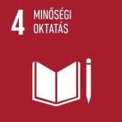

Üdvözlünk az oldalon!
A minőségi oktatás rendkívül fontos minden társadalom számára, mivel alapvetően hozzájárul a jövő generációk fejlődéséhez és sikeres társadalmi működéshez. Itt van néhány kulcsfontosságú pont, amelyek megvilágítják ennek a fontosságát:
- Készségek és tudás fejlesztése: A minőségi oktatás lehetőséget biztosít a diákoknak arra, hogy olyan készségeket és tudást szerezzenek, amelyek segítenek nekik sikeres életet élni és hozzájárulni a társadalomhoz. Ezek a készségek magukban foglalhatják az olvasás, az írás, a számolás, a kritikai gondolkodás, a problémamegoldás, a kommunikáció és az együttműködés képességeit.
- Társadalmi mobilitás elősegítése: A jó minőségű oktatás lehetőséget teremt arra, hogy a diákok függetlenül attól, hogy milyen szociális vagy gazdasági háttérrel rendelkeznek, feljebb léphessenek a társadalmi létrán. Ez elősegíti a társadalmi mobilitást és csökkenti a szegénységet.
- Innováció és gazdasági fejlődés: A minőségi oktatás kulcsfontosságú tényező az innováció és a gazdasági fejlődés előmozdításában. A jól képzett munkaerőre építő társadalmak hajlamosak arra, hogy versenyképesebbek legyenek a globális piacon, és könnyebben alkalmazkodjanak a változó gazdasági környezethez.
- Demokratikus értékek és polgári részvétel: A minőségi oktatás hozzájárul a demokratikus értékek megerősítéséhez és a polgári részvétel növeléséhez. A jól tájékozott és kritikus gondolkodásra képes polgárok hozzájárulnak a demokratikus folyamatokhoz és az aktív társadalmi részvételhez.
- Környezetvédelem és fenntarthatóság: Az oktatás lehetőséget nyújt arra, hogy a diákok megismerjék a környezetvédelem és a fenntarthatóság fontosságát, valamint megtanulják, hogyan lehetnek felelősségteljes állampolgárok a bolygónk jövője szempontjából.
Rólunk
A Fenntarthatóság a Mindennapokban egy weboldal, amelynek célja, hogy felhívja a figyelmet a fenntarthatóság fontosságára, és segítséget nyújtson az embereknek a fenntarthatóbb életmód kialakításához.
Az oldal létrehozói elkötelezettek a fenntarthatóság ügye iránt, és hisznek abban, hogy kis lépésekkel mindenki hozzájárulhat a jobb jövőhöz.
Fenntartható Életmód
A fenntartható életmód kialakítása sokféle módon lehetséges. Ide tartozik az energiahatékonyság, az újrahasznosítás, a fenntartható közlekedés és sok más tényező, amelyek segíthetnek csökkenteni környezeti lábnyomunkat.
Az oldalon tippeket és ötleteket találhatsz arról, hogyan változtathatsz mindennapi szokásaidon, hogy fenntarthatóbbá tegye az életedet.

Környezetvédelem
A környezetvédelem fontos része a fenntarthatóságnak. Az oldalunkon információkat találhatsz környezeti problémákról, például a klímaváltozásról, az erdőirtásról és a vízszennyezésről.
Szintén bemutatunk olyan kezdeményezéseket és szervezeteket, amelyek aktívan dolgoznak a környezetvédelemért és a fenntartható jövőért.
Hírek és Frissítések
Friss hírek és információk a fenntarthatóságról szerte a világon. Kísérj minket az utolsó fejleményekkel kapcsolatban!
Minden nap új cikkekkel és tanulmányokkal frissítjük oldalunkat, hogy naprakész információkat nyújtsunk a fenntarthatósággal kapcsolatos témákban.
Kapcsolat
Ha kérdéseid vagy észrevételeid vannak az oldallal kapcsolatban, kérjük, ne habozz felvenni velünk a kapcsolatot!
Írj nekünk az alábbi e-mail címre: info@fenntarthato.hu, vagy töltse ki az alábbi űrlapot, és mi hamarosan válaszolni fogunk.